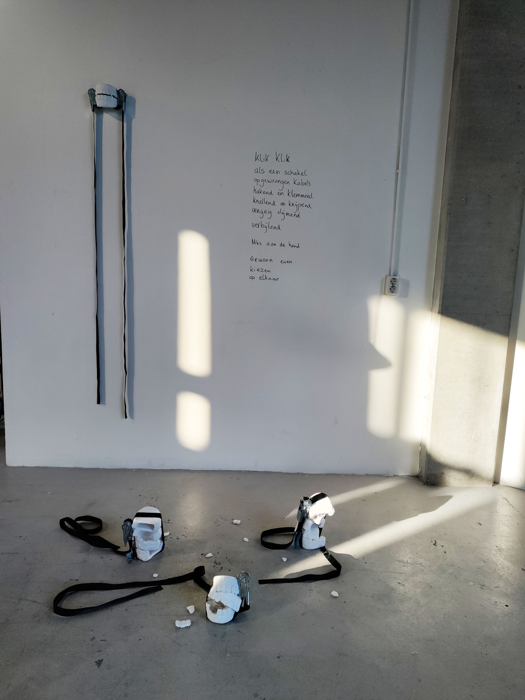
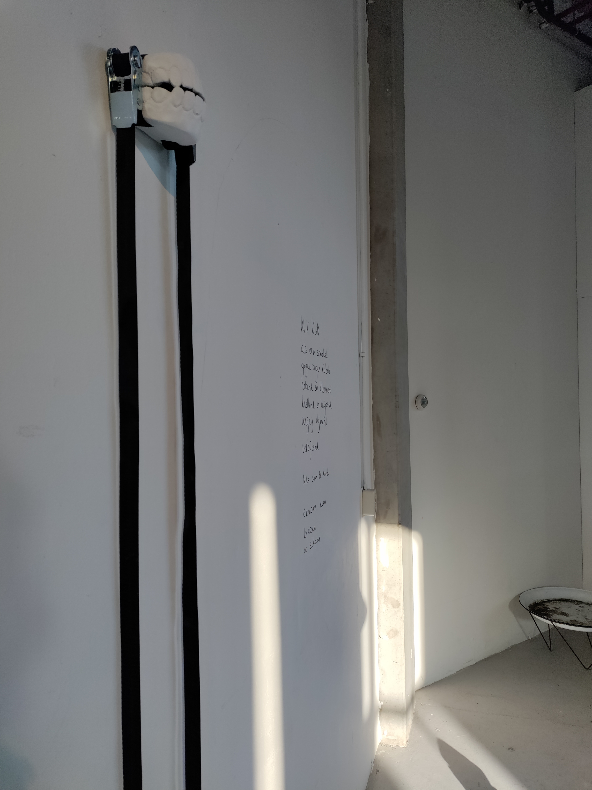
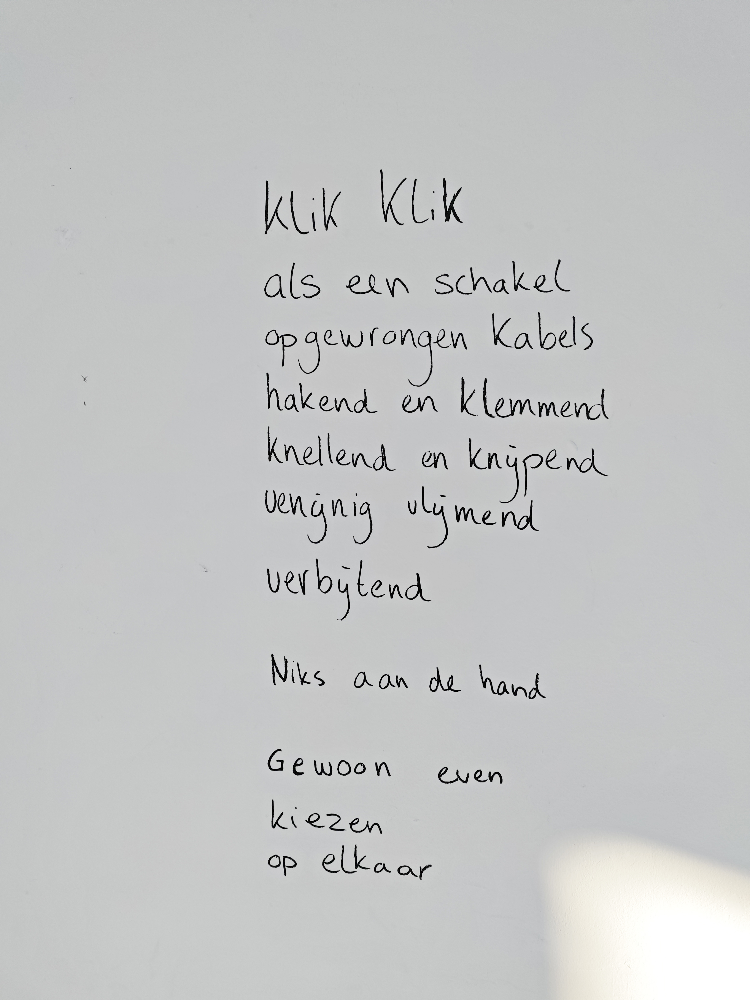
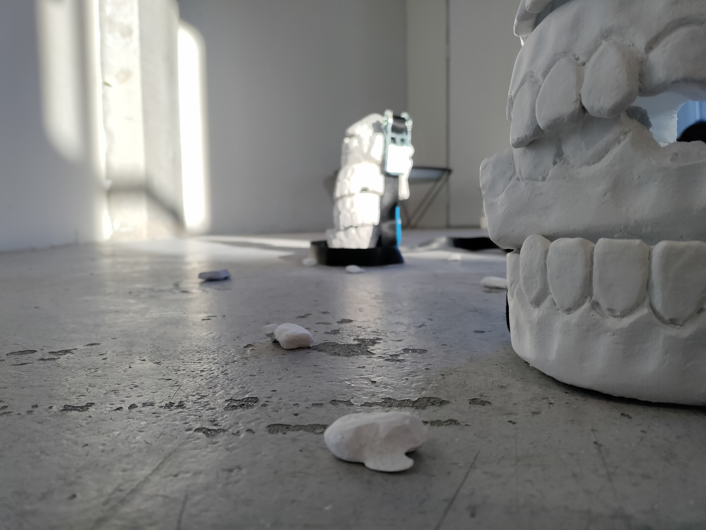
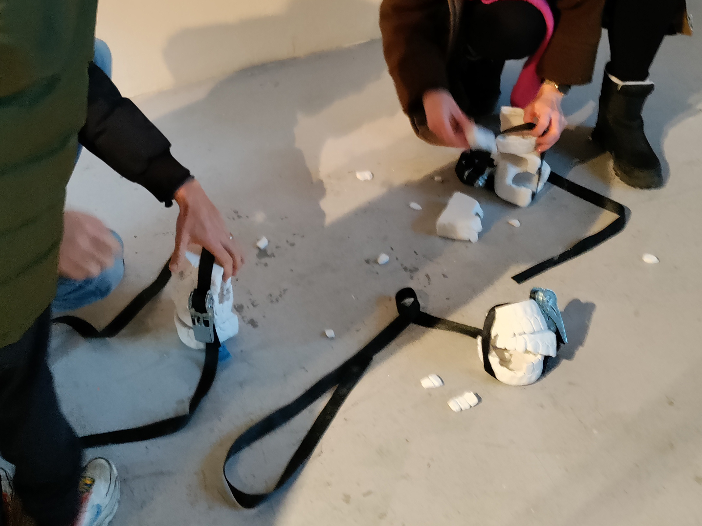
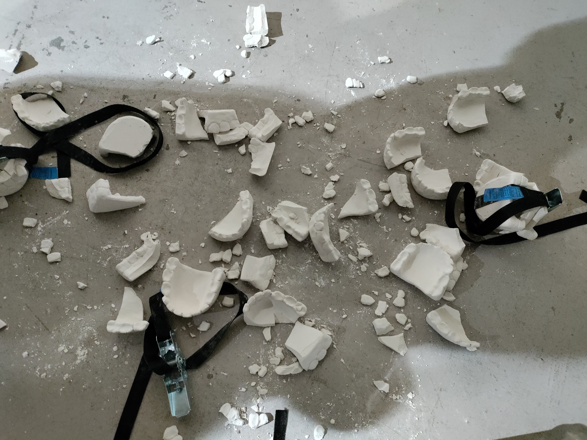

Kiezen op elkaar (Clenching)
Kiezen op elkaar (Clenching) is an interactive work consisting of three piles of oversized plaster dentures on the floor — grouped in sets of 3, 4 and 5, each bound by a tension strap — alongside a wall-mounted sculpture of two dentures, held together by straps that trail to the ground, and a poem in Dutch, written directly on the wall, about chewing away your emotions. Visitors are invited to tighten the straps around the floor piles, risking breaking the dentures in the process.
The dentures were cast from a mold based on my own teeth, scaled to roughly 1.5 times human size to feel both familiar and generic. The tension straps mimic the act of clenching. The accompanying poem draws on Dutch proverbs like 'even kiezen op elkaar' — literally "putting your molars together" — meaning to suppress what you feel and carry on.
The work stems from a personal diagnosis of Temporomandibular Disorder, a condition of the jaw muscles and nerves linked to chronic facial pain and tinnitus, often caused by the physical habit of clenching or grinding teeth in place of processing emotions. I wanted to make that invisible struggle tangible — something you could hold, tighten, and break — because that is exactly what clenching does: it fractures you, physically and mentally.





